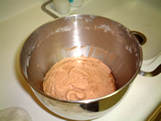
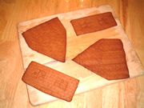
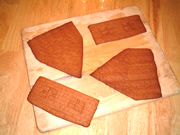
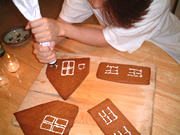
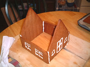
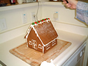
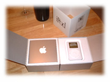
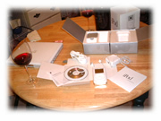

[前の日記] [過去の日記一覧へ] [次の日記]
新しいものは上になります。下から読んでね(^^)


[前の日記] [過去の日記一覧へ] [次の日記]

[ホーム]

|
2001年12月29日(木) くもり 『ジンジャーブレッドハウス』  この前のクリスマスの日にクッキーのジンジャーブレッドハウスを作りました。
この前のクリスマスの日にクッキーのジンジャーブレッドハウスを作りました。こっちでは、こういうクッキーの家を作るキットが売っていて、前日にいろいろなお店を回って探したんだけど、なぜか売り切れとか売っていなかったりとかで、見つかりませんでした。それならいっそう作ってしまおう！ということで生地を作るところからやってみました。 クッキーの生地を焼き、粉砂糖と卵白でアイシングをつくり、生地をくっつけました。アイシングが乾くのに一晩かかったので、粉砂糖の雪を屋根に降らせるまで、１日では終わらせられないほどの大作となりました(^^)
↓その過程はざっとこんな感じです↓
  



クッキー生地 バター 250g 薄力粉 500g グラニュー糖 120g ハチミツ 1カップ ココア 50g 塩 小さじ1/2 シナモン 小さじ2 ジンジャーパウダー 小さじ1 クローブ 小さじ1/2 ベーキングパウダー 小さじ1 1/2 バニラエッセンス 小さじ1 卵 1個 アイシング 卵白 2個分 粉砂糖 3カップ レモン汁 小さじ1 --１. ボールにバター(250g)を入れ白っぽくなるまでまぜる。グラニュー糖(120g)を加えふんわりと軽くなれば卵(1個)を加えなめらかになるまでしっかりまぜる。最後にはちみつを(1カップ)加える。 --２. 薄力粉(５００ｇ)、ココア(５０ｇ) 、塩 (小さじ１/２)、 シナモン(小さじ２)、ジンジャーパウダー (小さじ１)、 クローブ(小さじ１/２)、ベーキングパウダー(小さじ１ 1/2) 、バニラエッセンス (小さじ１)をふるいにかけ、１／２量を加え木べらで 混ぜる。 さらに残り１／２量を加え木ベラで混ぜる。冷蔵庫で１時間くらいい休ませる。 --3. オーブンを340F(１７０C)に余熱する。生地を台の上に出し、粉をふって ２、３ミリ厚さに伸ばす。 レンガ模様をつけるため、ナイフなどで軽く筋をつける。 オーブンペーパーの上に乗せて中段で２０分焼く。焼いたクッキーはしっかり冷めるまで平らな所に置きます。 屋根 19cm(横) x 17cm(縦) -- 2枚 壁 17cm(横) x 7(高さ) -- 2枚 三角型の壁 17cm（奥行き) x 19cm(高さ) -- 2枚 --４. アイシングを作る。泡立て器で卵白(2個分)を泡立て白っぽく全体に泡立ったらレモン汁(小さじ1)を加える。 粉砂糖(3カップ)を数回に分けて加える。 --５. 一番細い口金をつけた絞り袋にアイシングを入れ、窓などを描いて、壁を４枚つける。最後に屋根をつける。アンジェリカを飾る。 --6. 一晩おいて、粉砂糖をふりかけ雪にする。 粉砂糖と卵白をまぜると糊になるとは知りませんでした。クッキーはときどき作るけど、ジンジャーブレッドクッキーは、ジンジャーパウダーや、シナモンや、クローブをを入れるので、アメリカで買うクッキーの香りがします。 こっちでは、クリスマスの飾りは１月の１週くらいまでは片付けないので、私たちのこのジンジャーブレッドハウスも、しばらく部屋に飾ります(^^)

2001年12月27日(木) くもり 『iPod』 去年までは年末が１週間も休みになることはなくて、でも、自主的に休暇をとる人が多かったこともあり、年末は出社してもたいして仕事もなく楽々でした。でも今年は会社が休暇を決めたためか、休み前の締め切りも多くて、最後の方、わりとバタバタしてました。だから、あまりこの休暇は歓迎してなかったんだけど、いざ休みがはじまってみるとやっぱりいいです。 普段、なかなかできないパソコンの整理ができました。（私は片付けるのが大好き）今までWindowsに保存してたものをマックに移したり、ばらばらになっていたファイルをまとめたり、アイコンを使いやすくしたり、初期設定を変更したり、と、特にOSXが、いっそう使いやすくなりました(^^)  さて、先週の忙しいさなか、１１月に注文していた iPodがやっと来ました！左の箱がそれ。立方体の入れ物もなかなかよく、机の上に飾っています。 出たばかりのときは、ウォークマンみたいなものと書きましたけど、確かにウォークマンと思えばいいのですけど、もっといいです。ウォークマンだとCD１枚、カセット１本しか入らないでしょう？でも、iPodだと本当に宣伝のとおり、「１０００曲をポケットに」という感じです。５ギガの容量のあるんです。 ウォークマンとしてはもちろん、ステレオにつなぐと、そのままスピーカーから音楽が流れます。手元のiPodを操作するだけで、CDを入れ替えたりする面倒がありません。それから、カセットにつなげるアダプタも買ったので、車の中でも聞けます。昔、車の窓ガラスを割られてCDプレーヤーを盗まれてから、車の中ではカセットしか聴いてなかったのですが、これで、CDもいつでも聴けます。車を駐車するときには、iPodはポケットへ。盗まれると困るので(^^; まず、持っているCDを iBook(MacのCD-Rom)に入れて、iTune（アプリケーション）を立ち上げ、CDのコピーをします。iTuneが、インターネットを通して「CDデータベース」というのにアクセスし、そのCDの情報をとってきて内容のコピーをはじめます。インターネットを通すところがちょっと違うけど、昔、レコードやCDをテープにコピーした感覚ですね。  そして、Firewire（接続コード）を使って iPodにつなぐと、iTuneの内容をコピーしはじめます。設定によりますが、私は常にiTuneの中身とiPodが同期するようにしています。（つまり、iTuneに入れたものが、自動的にiPodに行く。）そうやって、CDが何枚でも取り込めるのです。今のところ、CD１５枚くらい入れていますが、これでもまだ1.5ギガにもなりません。全部で５ギガ分はいるので、まだまだ入りますね。消したければ、iTuneから削除すればいいのです。 操作も簡単で、自分のリスト別、アーティスト別、曲目別に選べます。シャッフルやリピート、スリープもできます。再生中の曲が表示されるので、新しいCDでも、曲のタイトルがすぐわかります。ボリュームもその場で変えられるし、10時間以上持ちます。休みの日に１日中聴いても充電の必要がありません。充電用のコンセントもあるし。日本語の選択も簡単。表示設定で英語を選んでも、タイトルやアーティストが日本語の場合は、日本語で表示されます。 ここのところ、CDにはあまり興味をもっていなかったんだけど、またまた聴きたくなってきました(^^) ところで、５ギガのハードディスクなので普通のフロッピーディスクのようにデータを持ち運びできるかも、とも思ったけど、音楽用に特殊にフォーマットされているということで、音楽以外には使えないようです。（と思っていましたが、実は使えるそうです。オプション設定で、HDDを普通に使う、というオプションあり）あと、FirewireはなくてもUSB があれば使えます。（と思っていましたが、私の勘違いだったようです。USBは使えないそうです(^^;）iTuneは無料のマック用のソフトですが、Windows用はないんじゃないかな？（と思っていましたが、あるそうです(^^;、xPodというWindows用のソフトがあるそう） アップルのサイトに詳しいことが載ってるので、興味のある人は読んでみてね(^^) *この日記を書き終わってから、いろいろと情報が寄せられました。カッコ内が訂正版(^^;） 2001年12月24日(月) くもり 『クリスマス』 クリスマスはいかがでしたか？こっちは今日、24日、明日がクリスマスです。 私の会社は今年は、クリスマスからお正月までお休みです。会社によって、そ の年によって、年末年始のお休みって違うんだけど、不況のときは、こうやっ て、1週間とか、まともてお休みにしてしまう会社が多いらしいです。誰も会 社に来なければ、電力の消費がかなりおさえられるらしいんですね。 去年は、日本で言う年末年始の休暇ってなかったので、普通のスケジュールだっ たんだけど、今年はこうやって1週間もお休みになるために、休み前に終わら せることが多くてたいへんでした。 でも無事、終わりました。ひとつ悔やまれるのは、会社のクリスマスの飾りを デジカメに収めるのを忘れてしまったこと。3週間前から、すごくきれいに飾 り付けされてたので、毎日「明日、デジカメを持ってこよう」と思っていたの に、忘れてしまいました。残念(><@) |
|
新しいものは上になります。下から上に読んでね(^^) |
[前の日記] [過去の日記一覧へ] [次の日記]
[ホーム]